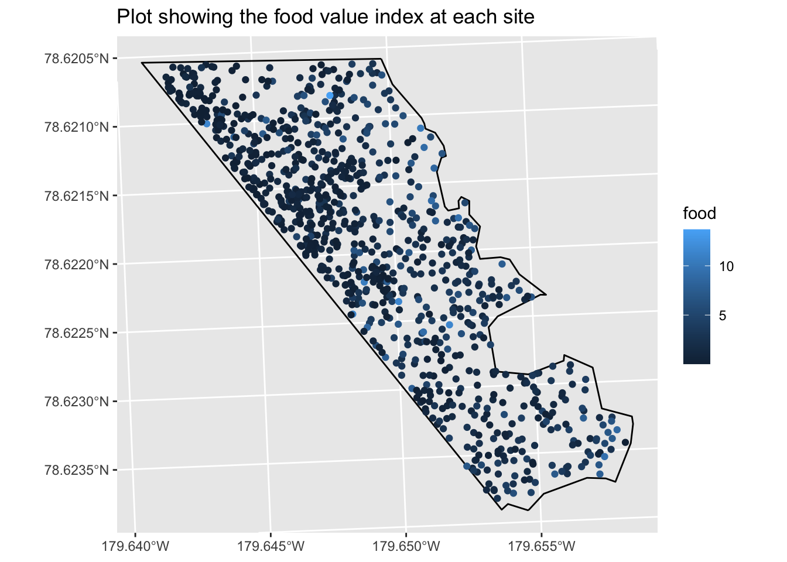
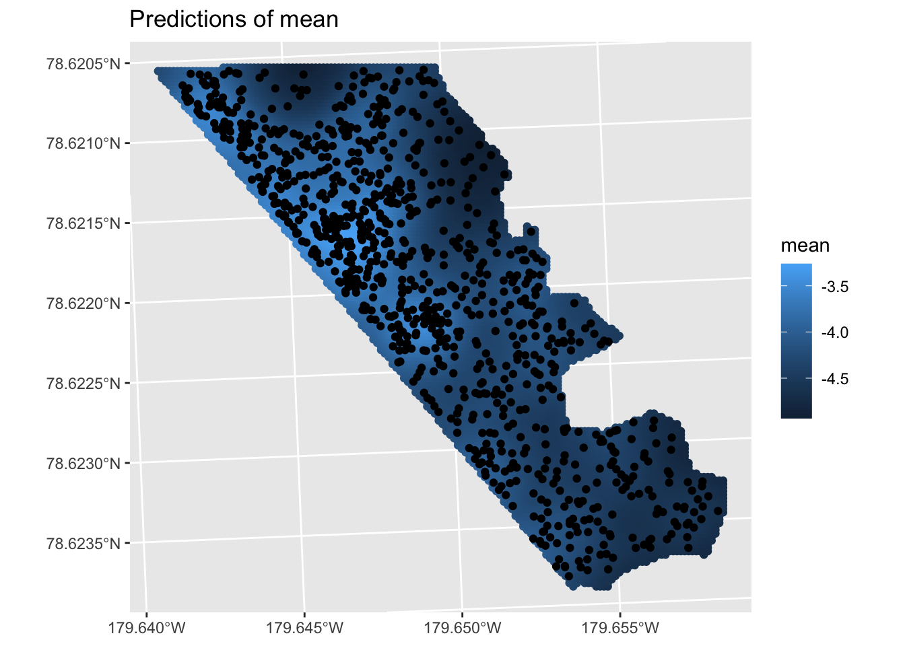
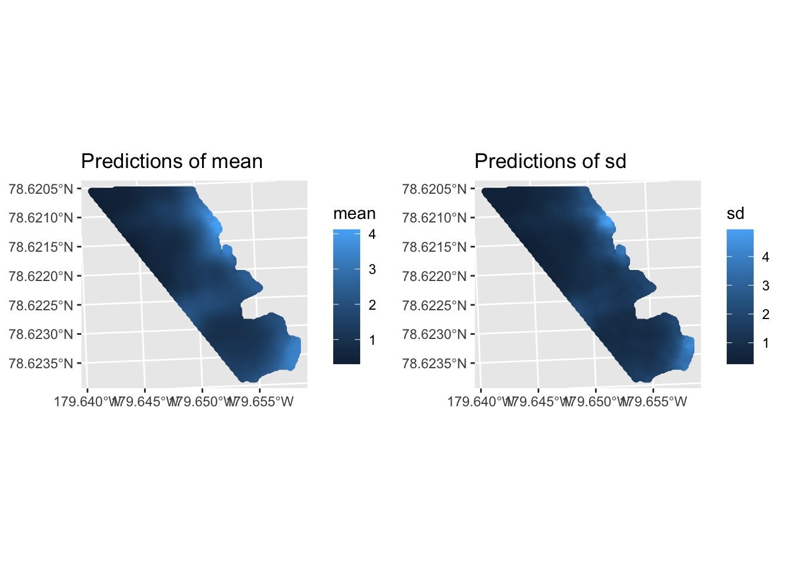
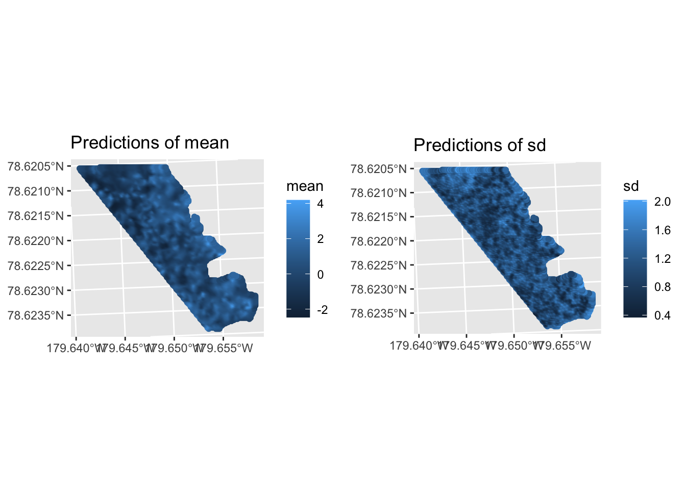
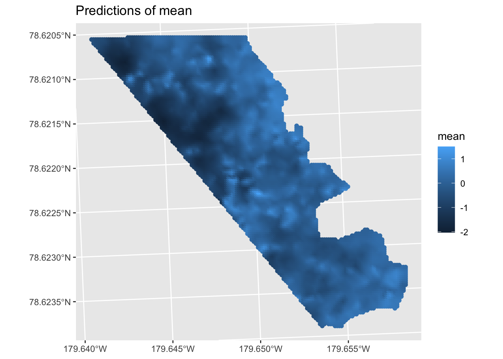

library(spatstat)
library(PointedSDMs)
library(sf)
library(sp)
library(ggplot2)
library(inlabru)
library(INLA)Marked Point Process
Real datasets are often fairly complex, and information on the species other than their location data may also be collected. Additional information could be the length of a specific plant, or the weight of a group of mammals, something which describes the underlying characteristics of the studied species’. Using such information results in a marked point process (see Illian, Sørbye, and Rue (2012) for an overview); and this framework may be incorporated in the PointedSDMs R package.
This vignette gives an illustration on how include marks in the model framework, by using data on Eucalyptus globulus (common name: blue gum) on the Koala Conservation Center on Philip Island (Australia), collected by a community group between 1993 and 2004 (Moore et al. 2010). The dataset contains a multitude of different marks, however for this study we will be focusing on two: food, which is some index of the food value of the tree (calculated as dry matter intake multiplied by foliage palatability), and koala, describing the number of koala visits to each tree. No inference of the model is completed in this vignette due to computational intensity of the model. However the R script and data are provided below so that the user may carry out inference.
data(Koala)
eucTrees <- Koala$eucTrees
boundary <- Koala$boundary#> [1] "data.frame"
Lets first create a model for the tree locations only: in this example, we will assume that these locations are treated as present-only data.
points <- startISDM(euc, Boundary = boundary,
Projection = proj,
Mesh = mesh)
points$specifySpatial(sharedSpatial = TRUE,
prior.range = c(120, 0.1),
prior.sigma = c(1, 0.1))
pointsModel <- fitISDM(points, options = list(control.inla = list(int.strategy = 'eb')))
pointsPredictions <- predict(pointsModel, mask = boundary,
mesh = mesh, predictor = TRUE)
pointsPlot <- plot(pointsPredictions, variable = 'mean',
plot = FALSE)
pointsPlot$predictions$predictions$mean +
gg(euc)
Now lets add the marks to this framework by specifying the name of the response variable of the marks with the argument markNames, and the family of the marks with the argument markFamily. Doing so will model each marks as a separate observation process, based on the family specified.
marks <- startMarks(euc, Boundary = boundary,
Projection = proj,
markNames = c('food', 'koala'),
markFamily = c('gamma', 'poisson'),
Mesh = mesh)
marks$specifySpatial(sharedSpatial = TRUE,
prior.range = c(120, 0.1),
prior.sigma = c(1, 0.1))
marks$specifySpatial(Mark = 'koala',
prior.range = c(120, 0.1),
prior.sigma = c(1, 0.1))
marks$specifySpatial(Mark = 'food',
prior.range = c(60, 0.1),
prior.sigma = c(1, 0.1))
marksModel <- fitISDM(marks, options = list(control.inla = list(int.strategy = 'eb'),
safe = TRUE))
foodPredictions <- predict(marksModel, mask = boundary,
mesh = mesh, marks = 'food', spatial = TRUE,
fun = 'exp')
koalaPredictions <- predict(marksModel, mask = boundary,
mesh = mesh, marks = 'koala', spatial = TRUE)
plot(foodPredictions, variable = c('mean', 'sd'))
plot(koalaPredictions, variable = c('mean', 'sd'))
For the second mark model we only include the food mark, but this time we use a log-linear model with additive Gaussian noise. This is specified using the .$updateFormula slot function, and then by adding the scaling component to the inlabru components with the .$addComponents slot function to ensure that it is actually estimated. Moreover we assume penalizing complexity priors for the two spatial effects, as well as specify bru_max_iter in the options argument to keep the time to estimate down.
marks2 <- startMarks(euc, Boundary = boundary,
Projection = proj,
markNames = 'food',
markFamily = 'gaussian',
Mesh = mesh)
marks2$updateFormula(Mark = 'food',
newFormula = ~ exp(food_intercept + (shared_spatial + 1e-6)*scaling + food_spatial))
marks2$changeComponents(addComponent = 'scaling(1)')
#> Model components:
#> ~-1 + shared_spatial(main = geometry, model = shared_field) +
#> food_spatial(main = geometry, model = food_field) + euc_intercept(1) +
#> food_intercept(1) + euc_food_spatial(main = geometry, copy = "shared_spatial") +
#> scaling(1)
#> <environment: 0x15069aa48>
marks2$specifySpatial(sharedSpatial = TRUE,
prior.sigma = c(1, 0.01),
prior.range = c(120, 0.01))
marks2$specifySpatial(Mark = 'food',
prior.sigma = c(1, 0.01),
prior.range = c(120, 0.01))
marksModel2 <- fitISDM(marks2, options = list(control.inla = list(int.strategy = 'eb'),
bru_max_iter = 2, safe = TRUE))
predsMarks2 <- predict(marksModel2, mask = boundary, mesh = mesh,
formula = ~ (food_intercept + (shared_spatial + 1e-6)*scaling + food_spatial))
plot(predsMarks2)
References
Illian, Janine B, Sigrunn H Sørbye, and Håvard Rue. 2012. “A Toolbox for Fitting Complex Spatial Point Process Models Using Integrated Nested Laplace Approximation (INLA).” The Annals of Applied Statistics 6 (4): 1499–1530. https://doi.org/10.1214/11-AOAS530.
Moore, Ben D, Ivan R Lawler, Ian R Wallis, Colin M Beale, and William J Foley. 2010. “Palatability Mapping: A Koala’s Eye View of Spatial Variation in Habitat Quality.” Ecology 91 (11): 3165–76. https://doi.org/10.1890/09-1714.1.